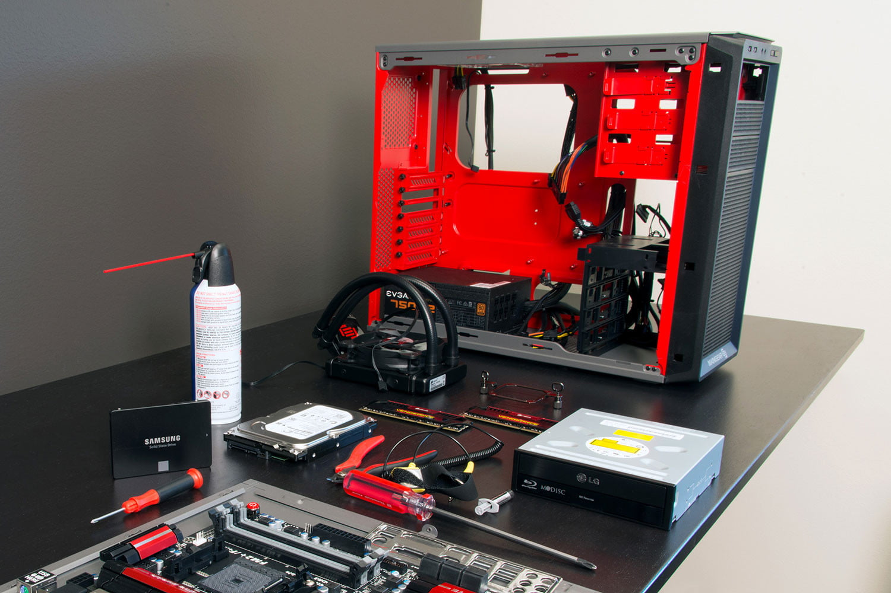

Building your own pc is about more than just the end result. There's a lot of fun to be had throughout the whole process, and bulding it yourself will bring you a deeper understanding of what's going on with your machine. Once you've built a PC from scratch, you'll have a whole new appreciation for the devices you use on a daily basis.
Needs and Wants
The first step of building a PC is figuring out what you need and want out of the finished machine. Are you looking for a beastly gaming rig or a powerful video processing workhorse? Or maybe you want a small PC to power your living room entertainment center. All these are perfectly valid goals, and will determine what hardware your PC will use. Here's a few things you should consider when it comes to your needs and wants:
What kind of overall processing power do you want?
How much graphical processing power will you need?
Will you need a lot of storage space?
What operating system do you prefer?
Part selection
Once you know what your system requirements are, it's time to choose the parts that will meet those requirements. PC hardware changes fast, so there's no hard and fast rules as to what is and isn't good, but here's some general guidelines:
The most expensive part of your computer should be either the CPU, for a work computer, or the GPU, for a gaming computer.
The next most important part you should choose is the motherboard. Which type of motherboard you can get will depend on what CPU you chose, but make sure it's a high quality motherboard with the best chipset you can afford. This will provide a good foundation for later upgrades.
The type of storage you choose can make a huge difference in how your PC performs - a standard HDD hard drive will be the cheapest, but a SATA SSD or NVME SSD could make your computer boot up in seconds rather than minutes.
Assembly
Assembling a PC is honestly as easy as assembling a LEGO creation. Everything has it's own place where it will fit and everything is labeled with what goes there. You may need a magnifying glass to read some of those labels, but as long as both ends of what you are connecting have the same markings, you should be just fine. If you have any trouble or get lost or just want some extra guidance, check out Youtube! There are a ton of video guides on the topic.
